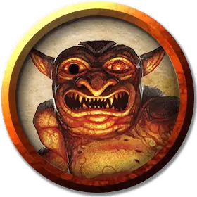

Эйдолон
Eidolon
Средняя Нежить, любое мировоззрение

Класс Доспеха 9
Хиты 63 (18к8 - 18)
Скорость 0 футов, летая 40 футов (парит)
| мод | спас | ||
|---|---|---|---|
| СИЛ | 7 | −2 | −2 |
| ЛОВ | 8 | −1 | −1 |
| ТЕЛ | 9 | −1 | −1 |
| мод | спас | ||
|---|---|---|---|
| ИНТ | 14 | +2 | +2 |
| МДР | 19 | +4 | +8 |
| ХАР | 16 | +3 | +3 |
Навыки Восприятие +8
Сопротивление урону звук, кислота, огонь, электричество; дробящий, колющий, рубящий от немагических атак
Иммунитет к урону некротическая энергия, холод, яд
Иммунитет к состояниям окаменение, опутанность, отравление, сбивание с ног, захват, паралич, очарование, испуг, истощение
Чувства тёмное зрение 60 футов, пассивное Восприятие 18
Языки все, известные при жизни
Опасность 12 (8400 опыта)
Бонус мастерства +4
Среда обитания Город, Горы, Лес, Луг, Побережье, Пустыня
Особенности
Бестелесное перемещение. Эйдолон может передвигаться сквозь других существ и объекты, как если бы они были труднопроходимой местностью. Он получает 5 (1к10) урона силовым полем, если оканчивает свой ход внутри объекта, отличного от священной статуи [sacred statue].
Священное оживление (перезарядка 5-6). Когда эйдолон двигается сквозь пространство, занятое священная статуя [sacred statue], эйдолон исчезает, превращая статую в существо, находящееся под его контролем. Эйдолон использует параметры священной статуи [sacred statue], заменяя ими свои параметры.
Сопротивление изгнанию. Эйдолон совершает спасброски против эффектов изгоняющих Нежить с преимуществом.
Действия
Божественный ужас. Каждое существо в пределах 60 футов от эйдолона, которое может его видеть, должно преуспеть в спасброске Мудрости Сл 15, или станет испуганным на 1 минуту.
Пока существо испугано таким образом, оно должно совершать действие «Рывок» и удаляться от эйдолона по максимально безопасному маршруту в начале каждого своего хода. Если существу некуда двигаться, то оно становится ошеломлённым до того момента, пока не сможет удаляться от эйдолона вновь.
Испуганная цель повторяет спасбросок в конце каждого своего хода, завершая эффект в случае успеха. В случае успешного спасброска цель становится иммунной к Божественному ужасу эйдолона на следующие 24 часа.
Описание
У божеств есть много способов защитить места, которые они считают святыми. Одни из помощников, на которых они полагаются в этом, эйдолоны – призрачные духи, связанные священной клятвой защищать место, посвящённое своему божеству. Созданные из душ тех, кто доказал свою преданность, эйдолоны крадутся по храмам и склепам, по местам, где происходили чудеса и спрятаны реликвии, чтобы ни один из врагов не смог заполучить опору вопреки божествам, захватив, осквернив, или верша насилие в подобных местах. Если враг с такими намерениями вступает в защищённое место, эйдолон входит в высеченный сосуд – статую, специально приготовленную для размещения душ этих защитников.
Затем эйдолон оживляет статую и использует позаимствованное тело, чтобы выдавить злоумышленников, которые пришли красть реликвии, оставленные под охраной.
Священные хранители. Для создания эйдолона требуется фанатично преданный дух – личность человека, который при жизни беспрекословно служил своей вере. После смерти божество может наградить такого последователя вечным служением на защите священного места. У эйдолона нет других целей, кроме как охраны места, куда он был назначен, и он никогда не уйдёт.
Анимированные статуи. У эйдолонов есть несколько способов защищать себя, кроме пробуждения сосудов. Когда злоумышленники вторгаются, эйдолон сливается с одной или несколькими статуями. В следствии этого, он контролирует конструкта, будто тот, его собственное тело, используя свои кулаки для того чтобы выдавить нарушителей, разбить и сокрушить все, до чего достанет.
Природа нежити. Эйдолон не нуждается в воздухе, пище, питье или сне.